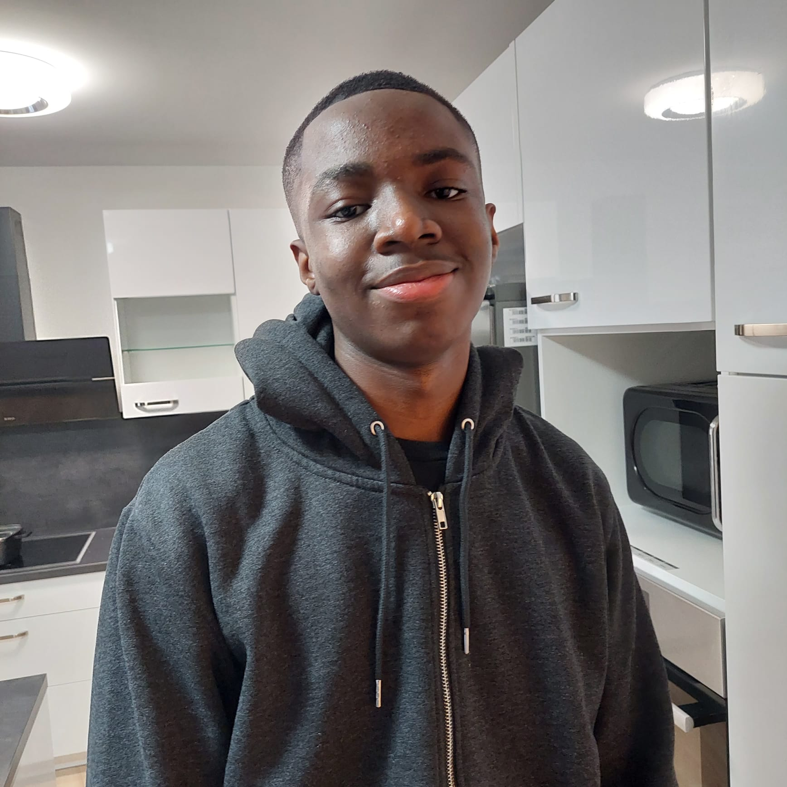

Ich heiße
Miracle Osawe
Ich besuche derzeit die HTBVLAs Spengergasse und bin total begeistert von allem, was mit Animation und Filmproduktion zu tun hat. Ich habe schon ein paar Projekte auf eigene Faust gemacht, weiß aber, dass ich gerade erst anfange!
Erwarten Sie in Zukunft weitere Projekte von mir!

Dies ist mein ersten Projekt, auch wenn es nur 2 Sekunden lang ist, habe ich viel gelernt, wie z.B.
die Verwendung des Puppet-Werkzeugs, das ich für das "Squash and Stretch" des roten Quadrats verwendet habe.
In diesem Projekt habe ich auch die Verwendung und Bedeutung des Graph-Editors kennengelernt und wie er der Charaktererstellung hilft.
Diese Drehungen geschahen in meinem "Hinterhof" mit Dingen, die ich zu Hause hatte, oder mit Requisiten, die ich
selbst hergestellt habe. Diese Werbung für dieses imaginäre Produkt wurde mit meinem Handy aufgenommen
und mit einem billigen Stativ für eine gewisse Stabilität.